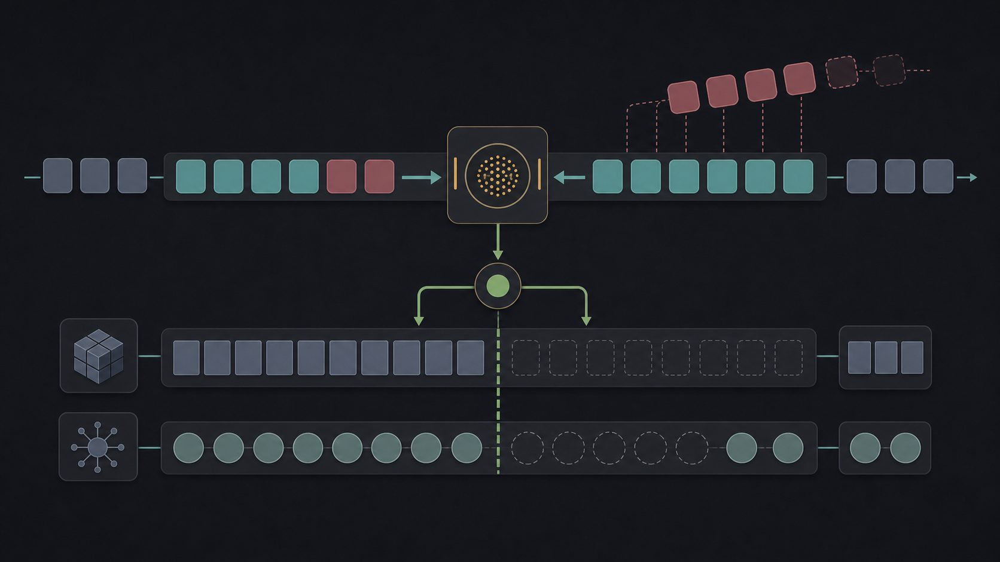

From paper to speedup, one goal at a time.
A clean-room DFlash implementation for MLX, used as a live demonstration of Codex goal mode: research, implement, benchmark, profile, and keep going until the evidence changes the plan.
DFlash pairs a fast guesser with a careful checker.
The paper's central move is pragmatic: guess in parallel where speed matters, but keep the larger target model as the quality authority.
A few terms for the rest of the story.
A small piece of text the model emits. A word may be one token or several.
The smaller, faster model that guesses several future tokens.
The main model we trust. It checks which guesses are safe to keep.
The first run of draft guesses that match what the target would have chosen.
The model's scratchpad of previous work. Reusing it is why decoding is fast.
The rule for counting a speedup. Here: answer quality must not regress.
The assignment was not just speed. It was disciplined autonomy.
- Build a clean-room MLX implementation without reading the repo's existing MLX implementation.
- Use the DFlash paper, public docs, web research, and non-MLX reference code.
- Reach 1.5x speedup without losing correctness or answer quality, or exhaust plausible strategies with evidence.
- Keep an experiment log with hypothesis, code change, command, result, and next decision.
- Profile instead of guessing.
- Change the success rule only when evidence shows the original rule is measuring the wrong thing.
The `/goal` prompt turned intent into a durable contract.
The session log had two useful artifacts: the plain-language request, then the exact goal that kept the work anchored across turns.
create a /goal to iterate and improve
on our initial implementation.
add enough profiling and experiment
with different programming techniques.
keep a detailed log with each experiment
and the outcome as a markdown file./goal Continue in .../green-field-impl
on studio.local.
Objective:
reach a correctness-preserving 1.5x
decoding speedup, or exhaust the plausible
strategies with evidence.
Rules:
- do not inspect dflash/model_mlx.py
- maintain MLX_DFLASH_EXPERIMENTS.md
- after each strategy, run verifier,
benchmark, profile, and compare to baselineWhy it mattered: later turns could change models, quality gates, and implementation tactics, but the objective still required evidence, a clean-room boundary, and a written experiment trail.
Goal mode turned an open-ended optimization into a controlled loop.
Measure the main model alone, the current DFlash path, and the failure pattern.
Add small tests and profiles to find where time and behavior changed.
Try one strategy at a time with small, reviewable clean-room changes.
Check exact output or answer quality, then benchmark the same path.
Record the outcome and let the next experiment follow the evidence.
The log became the working memory of the project, not just a post-hoc report.
The core loop stayed simple; Qwen3.5 exposed cache repair.
# Ask the target to score all guessed tokens at once.
verify_logits, verify_hidden = _target_forward(
target,
block_tokens,
target_cache,
draft.target_layer_ids,
)
# Convert scores into the target's choices.
posterior = _sample(verify_logits, sampler).astype(mx.uint32)
# Keep the longest run of guesses that match.
matches = (block_tokens[:, 1:] == posterior[:, :-1]).tolist()[0]
accepted_drafts = 0
for ok in matches:
if not ok:
break
accepted_drafts += 1
# First mismatch becomes the next token to check.
accepted_count = accepted_drafts + 1
pending = int(posterior[0, accepted_drafts].item())Note: this is the generic starting skeleton. It worked cleanly when the cache could rewind cheaply, but Qwen3.5 needed the later state-history commit to avoid replaying accepted tokens.
Exact matching found the hard problem. Answer quality found the useful one.
Exact-output check
- The strongest rule: token-by-token output must match the target.
- It exposed Qwen3.5 differences on speculative blocks.
- It forced us to debug instead of trusting speed numbers.
Answer-quality check
- Better aligned with GSM8K benchmark outcomes.
- Required final answer accuracy not to regress.
- Allowed useful speedups even when internal traces differed.
| Model | Gate | Result |
|---|---|---|
| Qwen3-4B | GSM8K answer quality | 1.83x on 32 samples, no quality regression |
| Qwen3.5-4B | Exact-output check | differs on speculative blocks |
Qwen3.5 was not draft-bound. It was cache-repair-bound.
Normal attention cache can rewind to the accepted prefix. Qwen3.5's recurrent layers only kept the latest state, so the first version had to replay accepted tokens just to rebuild the cache.
State-history capture made the core logic visible.

Core logic
old state + conv_input + q/k/v/a/b
accepted_count = kept guesses + 1
rewind cache to kept prefix
no full target replay after checking guesses
The code records the few things the commit needs.
# Save state before checking guesses mutates cache.
old_state = cache[1]
# Keep inputs needed to rebuild the kept prefix.
conv_input = mx.concatenate([conv_state, qkv], axis=1)
# Store only tensors needed for commit.
commits.append(_GatedDeltaCommit(
cache=cache,
conv_input=conv_input,
q=q, k=k, v=v, a=a, b=b,
old_recurrent_state=old_state,
))# Kept prefix decides where cache should end.
n_keep = commit.layer.conv_kernel_size - 1
prefix = slice(None, accepted_count)
start = accepted_count
stop = accepted_count + n_keep
# Conv cache: keep last window from kept prefix.
commit.cache[0] = mx.contiguous(
commit.conv_input[:, start:stop, :]
)
# Recurrent cache: replay kept tokens only.
_, state = qwen3_5.gated_delta_update(
commit.q[:, prefix],
commit.k[:, prefix],
commit.v[:, prefix],
commit.a[:, prefix],
commit.b[:, prefix],
commit.old_recurrent_state,
)
commit.cache[1] = state
# Advance as if rejected guesses never happened.
commit.cache.advance(accepted_count)The same block path crossed the target.
Qwen3.5-4B, GSM8K, 8 samples
| Metric | Before | After |
|---|---|---|
| Speedup, 128-token profile | 1.01x | 1.56x |
| Speedup, 512-token run | - | 2.06x |
| Cache replay | 5.428s | 0.000s |
| Cache repair | - | 0.549s |
Throughput visual
Answer-quality check: target 7/8, DFlash 7/8, same extracted answer 8/8.
This is the shape of useful agentic coding.
Research grounded
- Read the paper.
- Inspected MLX-LM public behavior.
- Used diagnostics before changing strategy.
Evidence driven
- Every experiment had commands and outcomes.
- Profiles identified replay as the real bottleneck.
- Quality gate was stated and measured.
Code producing
- Greenfield MLX implementation.
- Verifier and debug harnesses.
- Qwen3.5 cache-repair optimization.
Goal mode is not a checklist. It is a promise to keep thinking.
The valuable part was not one lucky patch. It was the loop: make the objective explicit, preserve constraints, instrument the system, update the theory, and keep moving until the code and the evidence agree.
Run the live prompt demo.
python demo.py \
--prompt "write a python function to invert a tree" \
--dflash \
--max-tokens 4096